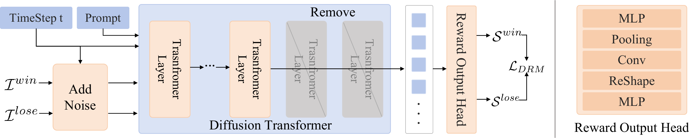
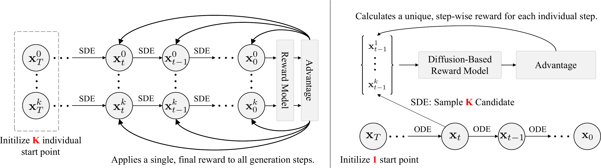
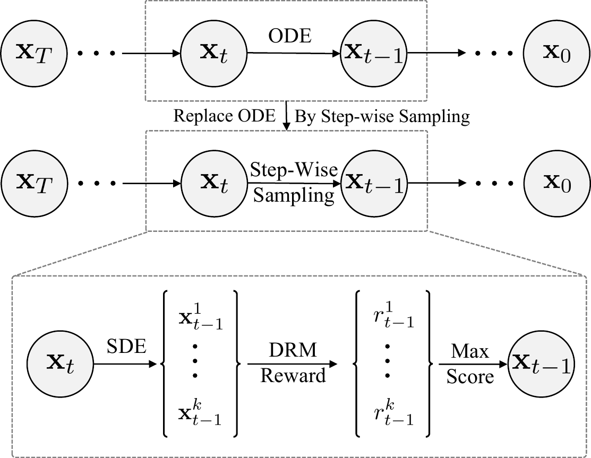
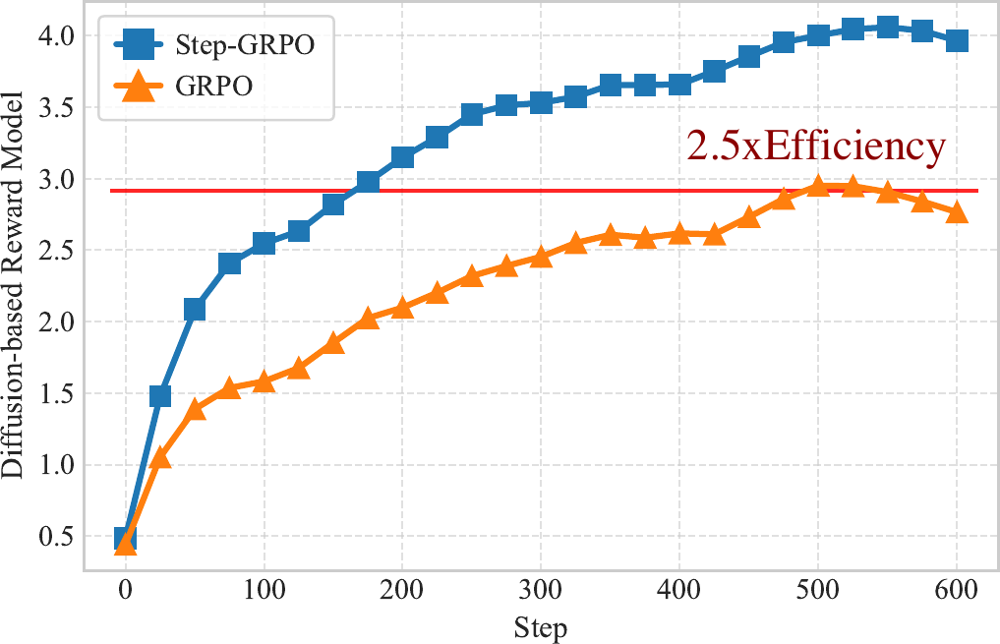
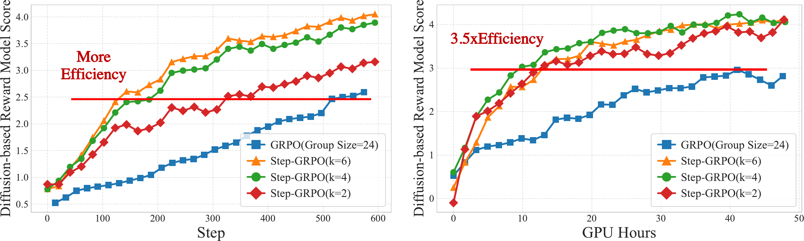
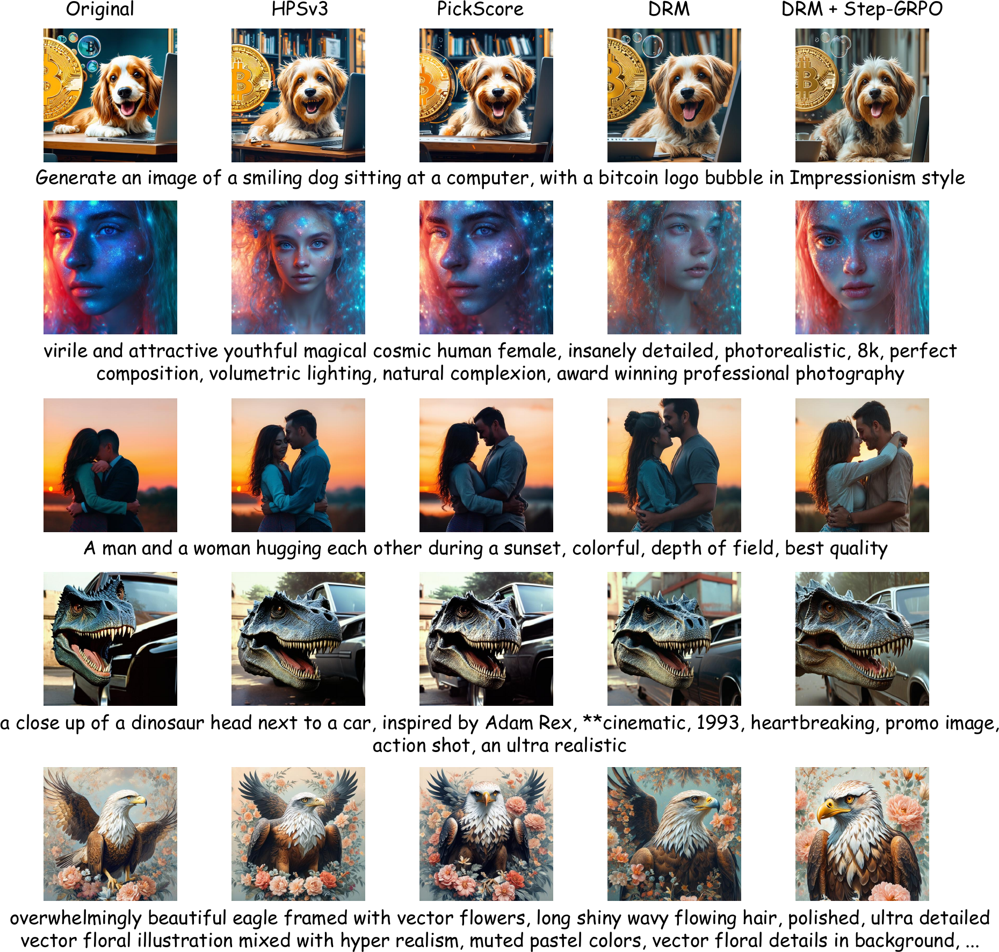
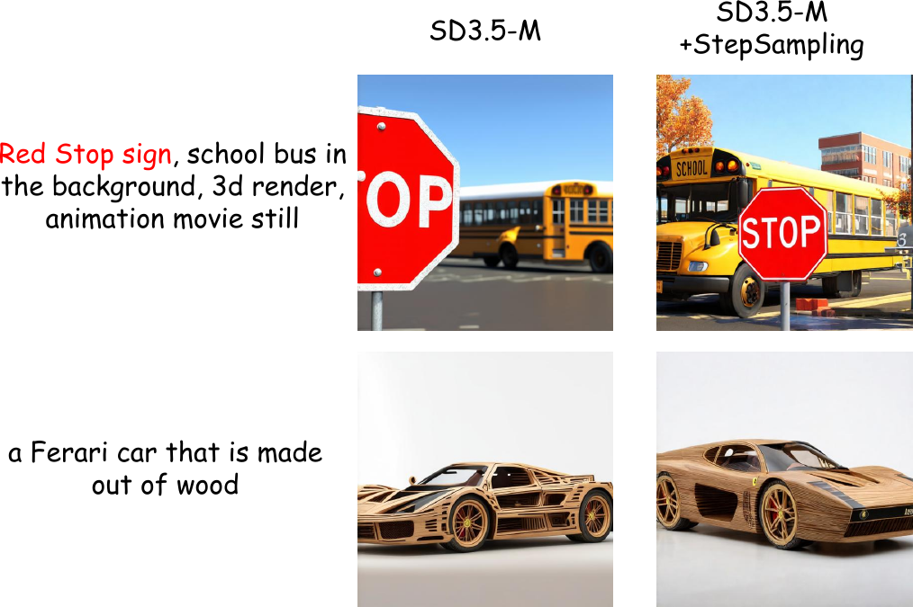
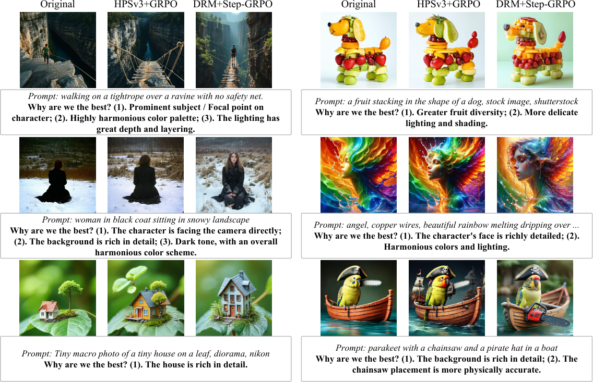
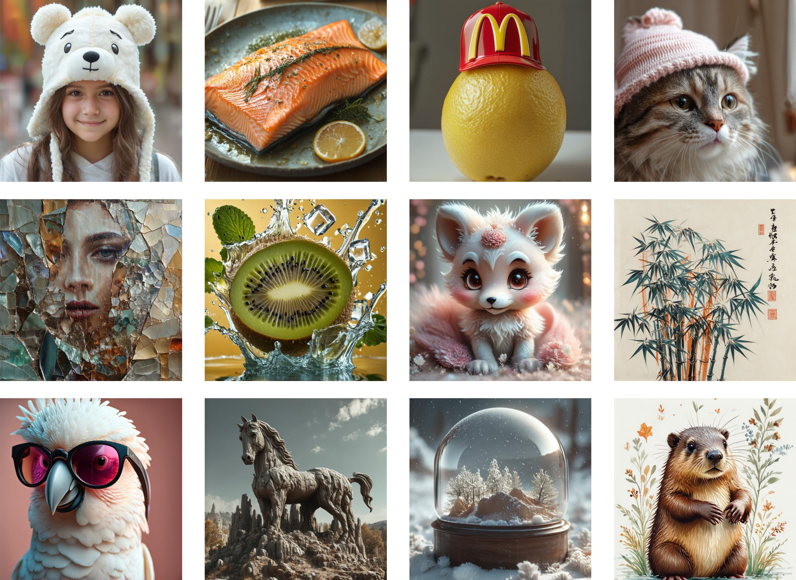

DRM: Diffusion-based Reward Model With Step-wise Guidance
TL;DR. A pre-trained diffusion model is itself a powerful reward model.
DRM scores any noisy intermediate latent, enabling dense per-step rewards
for RL alignment (Step-GRPO) and a training-free quality booster (Step-wise Sampling).
Comparison between previous reward models and DRM.
Existing reward models treat the generation process as a black box,
providing only a single, terminal reward based on the final output.
Our DRM offers fine-grained rewards for any noisy latent along the entire denoising trajectory.
Contributions
01Reward Model
A diffusion model is a reward model.
We introduce DRM, repurposing a pre-trained diffusion model as the
evaluative backbone. It inherits a deep understanding of aesthetics and
composition, and uniquely scores noisy intermediate latents at any
stage of generation.
02Optimization
Step-GRPO: dense per-step rewards.
A reinforcement learning algorithm that resolves the
credit-assignment problem in diffusion alignment. Step-GRPO uses
DRM's per-step rewards for far more stable and efficient policy optimization
than terminal-reward GRPO.
03Inference
Step-wise Sampling: training-free.
A plug-and-play inference strategy. At each denoising step we explore
multiple SDE branches and let DRM greedily steer the trajectory
toward higher-quality outcomes — no fine-tuning required.
Method
1. Diffusion-based Reward Model (DRM)
DRM predicts human preferences by leveraging the intermediate features from the
Diffusion Transformer (DiT) of a pre-trained diffusion model. We initialize the backbone
from SD3.5-Medium (2.5B parameters) and truncate the last three transformer layers
so that the parameter count matches HPSv3-2B for fair comparison.
Given a noisy latent $x_{t}$ at timestep $t$, the truncated DiT produces visual features
$f_{v} \in \mathbb{R}^{L \times d}$ that are fed into a lightweight reward head:
an MLP projects $f_v$ into a lower-dimensional space, after which the features are
reshaped into a 2D map and processed by a small convolutional network, followed by
pooling and a final linear projection to produce the preference score $s$.

Overview of the Diffusion-based Reward Model (DRM).(Left) Training pipeline: DRM takes a pair of preferred and dispreferred images,
both corrupted with noise at a specific timestep $t$, and predicts their reward scores.
The model is optimized via the Bradley–Terry preference loss.
(Right) The detailed architecture of our Reward Output Head.
DRM is trained on triplets $(I^{\text{win}}, I^{\text{lose}}, p)$ from HPDv3, Pick-A-Pic and ImageReward
(1.4M pairs total). For a randomly sampled timestep $t$, both images are corrupted via the
forward diffusion process and scored:
Standard GRPO treats the multi-step generation process as a black box and applies the
terminal reward uniformly to every timestep — an imprecise credit assignment that
ignores the varying contribution of each step. Because DRM is initialized from a diffusion
backbone, it can score noisy latents at any timestep, enabling dense per-step rewards.

GRPO vs. Step-wise GRPO.(Left) Naive GRPO relies on a single terminal reward computed at $t{=}0$
and broadcasts it uniformly to all preceding steps.
(Right) Step-GRPO branches out $k$ candidate samples at each timestep via SDE
and uses DRM to compute a precise, step-specific reward and advantage.
At each reverse-diffusion step $t$, starting from $x_{t+1}$, we draw $k$ SDE candidates
$\{x_t^i\}_{i=1}^k$ and score them with DRM. The immediate advantage for each
candidate is normalized within the local group:
Unlike conventional GRPO, this advantage is a local quantity that scores the decision
at the current timestep — yielding a much more direct and fine-grained policy-gradient signal.
3. Step-wise Sampling (Training-free)
DRM also doubles as an inference-time quality booster. Conventional deterministic
samplers follow a single fixed trajectory, so any early-step error compounds to the final image.
Step-wise Sampling implements an “explore-and-select” mechanism: at each timestep we
(1) explore by drawing $k$ SDE successors, (2) score each with DRM, and (3) greedily commit
to the highest-scoring branch.

Overview of Step-wise Sampling.
At each step $t$, we branch into $k$ candidates via SDE.
The DRM scores them and the top-scoring latent continues the trajectory.
We evaluate DRM against leading reward models on standard preference benchmarks.
Despite using only 2B parameters, DRM significantly outperforms the similarly-sized
VLM-based HPSv3-2B and is competitive with the much larger 7B variant — strong evidence
that a diffusion backbone is a more parameter-efficient route to reward modeling.
Model
Size
ImageReward ↑
PickScore ↑
HPDv2 ↑
HPDv3 ↑
CLIP ViT-H/14
—
57.1
60.8
65.1
48.6
Aesthetic Predictor
—
57.4
56.8
76.8
59.9
ImageReward
—
65.1
61.1
74.0
58.6
PickScore
—
61.6
70.5
79.8
65.6
HPSv2
—
65.7
63.8
83.3
65.3
MPS
—
67.5
63.1
83.5
64.3
HPSv3-2B
2B
57.9
63.6
80.8
66.3
HPSv3-7B
7B
66.8
72.8
85.4
76.9
DRM (Ours)
2B
64.1
73.4
82.2
74.0
Preference prediction accuracy (%). Bold = best, underlined = second-best.
DRM achieves the best PickScore and second-best HPDv3 with only 2B parameters.
Step-GRPO: Faster Convergence, Higher Ceiling

Reward curves for various RL algorithms optimized using our DRM.
Step-GRPO not only reaches a higher final reward but also converges
2.5× faster (in steps) than the standard GRPO baseline.
We RL-finetune SD3.5-Medium with PickScore, HPSv3 or DRM as reward, all under the same
Flow-GRPO recipe; for DRM we additionally evaluate the Step-GRPO algorithm.
Method
ImageReward ↑
PickScore ↑
HPSv3 ↑
SD3.5-Medium (base)
1.01
16.76
8.95
+ PickScore & GRPO
1.14
16.94
9.64
+ HPSv3 & GRPO
1.15
16.90
9.71
+ DRM & GRPO
1.14
16.95
10.07
+ DRM & Step-GRPO (Ours)
1.17
17.04
10.28
Performance of SD3.5-Medium fine-tuned with different reward models.
DRM + Step-GRPO sets a new state-of-the-art on all three benchmarks.

Reward curves with steps (left) and GPU hours (right) on the x-axis.
Even with the smallest group size $k{=}2$, Step-GRPO already outperforms GRPO,
and converges roughly 3.5× faster in GPU-hours.
Qualitative Comparison

Qualitative comparison of SD3.5-Medium optimized by various reward models.
DRM + Step-GRPO produces noticeably finer detail, fewer artifacts and more coherent
structures than competing methods.
Step-wise Sampling: Training-free Plug-and-Play
Step-wise Sampling needs no fine-tuning: simply branch into $k$ SDE candidates per
denoising step and use DRM to greedily pick the best one. We sweep
$k \in \{1, 2, 4, 6\}$ on the same protocol as Step-GRPO.
$k$
Time (s) ↓
ImageReward ↑
PickScore ↑
HPSv3 ↑
LPIPS ↑
1 (base)
2.88
1.01
16.76
8.95
0.650
2
5.63
1.08
16.84
9.02
0.661
4
7.75
1.14
16.81
9.32
0.663
6
9.83
1.15
16.93
9.49
0.662
Performance of SD3.5-Medium with Step-wise Sampling (512×512, 50 steps, bfloat16).
All preference metrics improve with $k$, and LPIPS confirms diversity is preserved.

Step-wise Sampling enhances both prompt fidelity and aesthetic quality.
Comparison of SD3.5-Medium outputs without/with Step-wise Sampling on the same prompts.
More Visual Results

Additional visual comparisons across baselines and our full method
(DRM + Step-GRPO + Step-wise Sampling).

Supplementary gallery generated by our final model.